CODING AGENTS AS PIXEL WORLD MODELS
traex/DeepSeek-V4.1-Flash · material_0015
点击播放 · 原生 RGB 像素
逐轮保存的候选
回放视频、检查图与代码变化。
每份候选均可单独播放。实际图片检查记录在下方工具轨迹中。
候选 01播放与检查图
点击播放 · 原生 RGB 像素

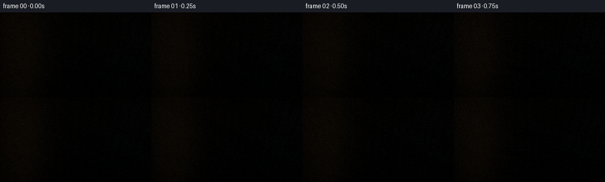
展开代码变化
--- 上一保存版本
+++ 本次保存版本
@@ -0,0 +1,684 @@
+from __future__ import annotations
+
+from pathlib import Path
+
+import cv2
+import numpy as np
+
+import artifact_io
+
+
+WIDTH = 256
+HEIGHT = 144
+FRAMES = 20
+FPS = 4.0
+SS = 2
+SHUTTER = 0.075
+IMPACT_TIME = 2.50
+IMPACT_ANGLE = np.deg2rad(52.5)
+START_ANGLE = np.deg2rad(4.0)
+
+CAM_POS = np.array([0.10, 2.80, 5.45], dtype=np.float64)
+CAM_TARGET = np.array([0.02, -0.25, 0.18], dtype=np.float64)
+WORLD_UP = np.array([0.0, 1.0, 0.0], dtype=np.float64)
+FOV_Y = np.deg2rad(43.0)
+
+BOARD_CENTER_0 = np.array([0.05, -0.705, 0.16], dtype=np.float64)
+BOARD_HALF = np.array([1.42, 0.105, 0.76], dtype=np.float64)
+BOARD_YAW = np.deg2rad(-6.5)
+TABLE_Y = -0.835
+WALL_Z = 2.95
+
+ROD_PIVOT = np.array([-2.25, 1.90, 0.68], dtype=np.float64)
+ROD_LENGTH = 3.00
+ROD_RADIUS = 0.142
+
+LIGHT_A = np.array([-2.3, 4.6, 3.5], dtype=np.float64)
+LIGHT_A_COLOR = np.array([1.0, 0.73, 0.46], dtype=np.float64)
+LIGHT_B = np.array([3.7, 2.1, 1.7], dtype=np.float64)
+LIGHT_B_COLOR = np.array([0.40, 0.56, 0.72], dtype=np.float64)
+
+
+def normalize(vector: np.ndarray) -> np.ndarray:
+ return vector / np.maximum(np.linalg.norm(vector, axis=-1, keepdims=True), 1e-9)
+
+
+def smoothstep(edge0: float, edge1: float, value):
+ x = np.clip((value - edge0) / (edge1 - edge0), 0.0, 1.0)
+ return x * x * (3.0 - 2.0 * x)
+
+
+def board_center(t: float) -> np.ndarray:
+ tau = max(t - IMPACT_TIME, 0.0)
+ pulse = np.exp(-3.7 * tau) * np.sin(15.0 * tau)
+ return BOARD_CENTER_0 + np.array(
+ [0.010 * pulse, -0.012 * pulse, 0.018 * pulse], dtype=np.float64
+ )
+
+
+def board_yaw(t: float) -> float:
+ tau = max(t - IMPACT_TIME, 0.0)
+ return BOARD_YAW + np.deg2rad(0.75) * np.exp(-3.0 * tau) * np.sin(11.0 * tau)
+
+
+def rod_angle(t: float) -> float:
+ if t <= IMPACT_TIME:
+ u = np.clip(t / IMPACT_TIME, 0.0, 1.0)
+ return START_ANGLE + (IMPACT_ANGLE - START_ANGLE) * (u**2.18)
+ tau = t - IMPACT_TIME
+ rebound = 15.5 * np.exp(-1.75 * tau) * np.sin(8.2 * tau)
+ return IMPACT_ANGLE - np.deg2rad(rebound)
+
+
+def rod_endpoints(t: float) -> tuple[np.ndarray, np.ndarray]:
+ theta = rod_angle(t)
+ direction = np.array([np.cos(theta), -np.sin(theta), 0.0], dtype=np.float64)
+ return ROD_PIVOT, ROD_PIVOT + ROD_LENGTH * direction
+
+
+def world_to_board(points: np.ndarray, center: np.ndarray, yaw: float) -> np.ndarray:
+ delta = points - center
+ c, s = np.cos(-yaw), np.sin(-yaw)
+ out = np.empty_like(delta)
+ out[..., 0] = c * delta[..., 0] - s * delta[..., 2]
+ out[..., 1] = delta[..., 1]
+ out[..., 2] = s * delta[..., 0] + c * delta[..., 2]
+ return out
+
+
+def board_to_world(points: np.ndarray, center: np.ndarray, yaw: float) -> np.ndarray:
+ c, s = np.cos(yaw), np.sin(yaw)
+ out = np.empty_like(points)
+ out[..., 0] = c * points[..., 0] + s * points[..., 2] + center[0]
+ out[..., 1] = points[..., 1] + center[1]
+ out[..., 2] = -s * points[..., 0] + c * points[..., 2] + center[2]
+ return out
+
+
+def impact_point() -> np.ndarray:
+ return rod_endpoints(IMPACT_TIME)[1]
+
+
+def impact_local(t: float) -> np.ndarray:
+ return world_to_board(impact_point(), board_center(t), board_yaw(t))
+
+
+def make_camera(t: float):
+ tau = max(t - IMPACT_TIME, 0.0)
+ shake = np.exp(-5.5 * tau)
+ offset = np.array(
+ [0.030 * shake * np.sin(34.0 * tau), 0.026 * shake * np.sin(27.0 * tau), 0.0]
+ )
+ position = CAM_POS + offset
+ target = CAM_TARGET + 0.35 * offset
+ forward = normalize(target - position)
+ right = normalize(np.cross(forward, WORLD_UP))
+ up = normalize(np.cross(right, forward))
+ return position, forward, right, up
+
+
+def ray_directions(position, forward, right, up):
+ yy, xx = np.mgrid[0 : HEIGHT * SS, 0 : WIDTH * SS]
+ x_ndc = (xx + 0.5) / (WIDTH * SS) * 2.0 - 1.0
+ y_ndc = 1.0 - (yy + 0.5) / (HEIGHT * SS) * 2.0
+ aspect = WIDTH / HEIGHT
+ tan_half = np.tan(FOV_Y * 0.5)
+ directions = (
+ forward[None, None, :]
+ + x_ndc[..., None] * right[None, None, :] * tan_half * aspect
+ + y_ndc[..., None] * up[None, None, :] * tan_half
+ )
+ return normalize(directions.reshape(-1, 3))
+
+
+def intersect_plane(origins, directions, height, normal_sign=1.0):
+ denom = directions[:, 1]
+ valid = np.abs(denom) > 1e-7
+ t = np.full(len(directions), np.inf, dtype=np.float64)
+ t[valid] = (height - origins[valid, 1]) / denom[valid]
+ valid &= t > 1e-5
+ normals = np.zeros_like(directions)
+ normals[:, 1] = normal_sign
+ return t, valid, normals
+
+
+def intersect_wall(origins, directions, z):
+ denom = directions[:, 2]
+ valid = np.abs(denom) > 1e-7
+ t = np.full(len(directions), np.inf, dtype=np.float64)
+ t[valid] = (z - origins[valid, 2]) / denom[valid]
+ valid &= t > 1e-5
+ normals = np.zeros_like(directions)
+ normals[:, 2] = -1.0
+ return t, valid, normals
+
+
+def intersect_obb(origins, directions, center, half, yaw):
+ c, s = np.cos(-yaw), np.sin(-yaw)
+ delta = origins - center
+ o = np.empty_like(delta)
+ d = np.empty_like(directions)
+ o[:, 0] = c * delta[:, 0] - s * delta[:, 2]
+ o[:, 1] = delta[:, 1]
+ o[:, 2] = s * delta[:, 0] + c * delta[:, 2]
+ d[:, 0] = c * directions[:, 0] - s * directions[:, 2]
+ d[:, 1] = directions[:, 1]
+ d[:, 2] = s * directions[:, 0] + c * directions[:, 2]
+
+ t_near = np.full(len(directions), -np.inf, dtype=np.float64)
+ t_far = np.full(len(directions), np.inf, dtype=np.float64)
+ near_axis = np.zeros(len(directions), dtype=np.int8)
+ near_sign = np.ones(len(directions), dtype=np.float64)
+ valid = np.ones(len(directions), dtype=bool)
+
+ for axis in range(3):
+ di = d[:, axis]
+ oi = o[:, axis]
+ parallel = np.abs(di) < 1e-8
+ valid &= ~(parallel & (np.abs(oi) > half[axis]))
+ safe = np.where(parallel, 1.0, di)
+ t1 = (-half[axis] - oi) / safe
+ t2 = (half[axis] - oi) / safe
+ lo = np.minimum(t1, t2)
+ hi = np.maximum(t1, t2)
+ better = valid & (lo > t_near)
+ near_axis[better] = axis
+ near_sign[better] = np.where(di[better] > 0.0, -1.0, 1.0)
+ t_near = np.maximum(t_near, lo)
+ t_far = np.minimum(t_far, hi)
+
+ valid &= (t_far >= np.maximum(t_near, 0.0)) & (t_far > 1e-5)
+ t = np.where(t_near > 1e-5, t_near, t_far)
+ valid &= np.isfinite(t)
+
+ local_hit = o + t[:, None] * d
+ normal_local = np.zeros_like(local_hit)
+ rows = np.arange(len(t))
+ normal_local[rows, near_axis] = near_sign
+ cw, sw = np.cos(yaw), np.sin(yaw)
+ normals = np.empty_like(normal_local)
+ normals[:, 0] = cw * normal_local[:, 0] + sw * normal_local[:, 2]
+ normals[:, 1] = normal_local[:, 1]
+ normals[:, 2] = -sw * normal_local[:, 0] + cw * normal_local[:, 2]
+ return t, valid, normals, local_hit
+
+
+def intersect_cylinder(origins, directions, start, end, radius):
+ axis = end - start
+ length = np.linalg.norm(axis)
+ w = axis / length
+ oc = origins - start
+ b = directions @ w
+ axial = oc @ w
+ q = oc - axial[:, None] * w
+ e = directions - b[:, None] * w
+ aa = np.einsum("ij,ij->i", e, e)
+ bb = 2.0 * np.einsum("ij,ij->i", q, e)
+ cc = np.einsum("ij,ij->i", q, q) - radius * radius
+ disc = bb * bb - 4.0 * aa * cc
+ side_ok = disc >= 0.0
+ root = np.sqrt(np.maximum(disc, 0.0))
+ t0 = (-bb - root) / np.maximum(2.0 * aa, 1e-9)
+ t1 = (-bb + root) / np.maximum(2.0 * aa, 1e-9)
+ t_side = np.where(t0 > 1e-5, t0, t1)
+ hit_axial = axial + t_side * b
+ side_ok &= (t_side > 1e-5) & (hit_axial >= 0.0) & (hit_axial <= length)
+
+ t = np.where(side_ok, t_side, np.inf)
+ normals = np.zeros_like(directions)
+ side_hit = origins + t[:, None] * directions
+ normals[side_ok] = (side_hit[side_ok] - start - (hit_axial[side_ok, None] * w)) / radius
+
+ for cap_axial, sign in ((0.0, -1.0), (length, 1.0)):
+ denom = directions @ w
+ cap_ok = np.abs(denom) > 1e-7
+ tc = (cap_axial - axial) / np.where(cap_ok, denom, 1.0)
+ cap_hit = origins + tc[:, None] * directions
+ radial = cap_hit - (start + cap_axial * w)
+ radial -= (radial @ w)[:, None] * w
+ cap_ok &= (tc > 1e-5) & (tc < t) & (np.einsum("ij,ij->i", radial, radial) <= radius * radius)
+ t[cap_ok] = tc[cap_ok]
+ normals[cap_ok] = sign * w
+ return t, normals
+
+
+def intersect_sphere(origins, directions, center, radius):
+ oc = origins - center
+ b = np.einsum("ij,ij->i", oc, directions)
+ c = np.einsum("ij,ij->i", oc, oc) - radius * radius
+ disc = b * b - c
+ root = np.sqrt(np.maximum(disc, 0.0))
+ t0 = -b - root
+ t1 = -b + root
+ t = np.where(t0 > 1e-5, t0, t1)
+ valid = (disc >= 0.0) & (t > 1e-5)
+ normals = normalize(origins + t[:, None] * directions - center)
+ return t, valid, normals
+
+
+def line_distance(px, pz, ax, az, bx, bz):
+ vx, vz = bx - ax, bz - az
+ denom = vx * vx + vz * vz + 1e-9
+ u = np.clip(((px - ax) * vx + (pz - az) * vz) / denom, 0.0, 1.0)
+ dx = px - (ax + u * vx)
+ dz = pz - (az + u * vz)
+ return np.sqrt(dx * dx + dz * dz)
+
+
+def damage_mask(u, v, t):
+ if t < IMPACT_TIME - 0.04:
+ return np.zeros_like(u)
+ age = np.maximum(t - IMPACT_TIME, 0.0)
+ growth = np.clip(age / 0.55, 0.0, 1.0)
+ p = impact_local(IMPACT_TIME)
+ du, dv = u - p[0], v - p[2]
+ radius = np.sqrt(du * du + dv * dv)
+ dent = np.exp(-((du / 0.115) ** 2 + (dv / 0.075) ** 2) * 2.5)
+
+ crack = np.zeros_like(u)
+ segments = [
+ (0.03, 0.00, 0.32, 0.03, 1.00),
+ (0.02, -0.01, 0.22, -0.17, 0.84),
+ (-0.02, 0.00, -0.24, -0.13, 0.88),
+ (0.01, 0.01, -0.20, 0.18, 0.75),
+ (0.00, 0.00, 0.16, 0.20, 0.67),
+ (-0.01, 0.01, -0.33, 0.02, 0.63),
+ ]
+ for idx, (ax, az, bx, bz, weight) in enumerate(segments):
+ reach = growth
+ ex, ez = p[0] + ax, p[2] + az
+ fx = p[0] + ax + (bx - ax) * reach
+ fz = p[2] + az + (bz - az) * reach
+ dist = line_distance(u, v, ex, ez, fx, fz)
+ width = 0.007 + 0.0035 * np.sin((idx + 1) * 2.1)
+ crack = np.maximum(crack, np.exp(-(dist / width) ** 2) * weight)
+ split = np.exp(-((dv - 0.012 * np.sin(du * 35.0)) / 0.008) ** 2)
+ split *= np.exp(-(du / (0.22 + 0.35 * growth)) ** 2) * growth
+ return np.clip(dent * (0.82 + 0.18 * np.sin(radius * 120.0)) + crack + 0.7 * split, 0.0, 1.0)
+
+
+def board_albedo(hit, local, normal, t):
+ top = normal[:, 1] > 0.45
+ u, v = local[:, 0], local[:, 2]
+ warp = 0.55 * np.sin(2.4 * u + 0.7 * v) + 0.22 * np.sin(8.2 * u - 2.1 * v)
+ phase = 7.5 * v + 0.20 * u + warp
+ grain = 0.5 + 0.5 * np.sin(phase * 2.0 * np.pi)
+ grain = np.clip(grain, 0.0, 1.0) ** 2.7
+ fine = 0.5 + 0.5 * np.sin(68.0 * v + 2.4 * np.sin(13.0 * u) + 5.0 * u)
+ pore = smoothstep(0.91, 0.99, fine) * 0.14
+ light = np.array([0.64, 0.34, 0.115])
+ dark = np.array([0.25, 0.105, 0.030])
+ color = dark + (light - dark) * (0.40 + 0.58 * grain[:, None])
+
+ for ku, kv, kr in [(-0.66, -0.18, 0.10), (0.92, 0.34, 0.075), (-0.20, 0.50, 0.045)]:
+ du, dv = u - ku, (v - kv) * 1.8
+ rr = np.sqrt(du * du + dv * dv)
+ knot = np.exp(-(rr / kr) ** 2) * (0.55 + 0.45 * np.sin(rr * 75.0))
+ color *= 1.0 - 0.32 * np.clip(knot, 0.0, 1.0)[:, None]
+
+ color *= (1.0 - pore[:, None])
+ edge = np.minimum(
+ BOARD_HALF[0] - np.abs(u),
+ np.minimum(BOARD_HALF[2] - np.abs(v), 0.10),
+ )
+ edge_wear = smoothstep(0.075, 0.0, edge)
+ color = color * (1.0 - 0.30 * edge_wear[:, None]) + np.array([0.28, 0.16, 0.065]) * (0.20 * edge_wear[:, None])
+
+ dmg = damage_mask(u, v, t)
+ charred = np.array([0.045, 0.018, 0.006])
+ color = color * (1.0 - 0.90 * dmg[:, None]) + charred * (0.90 * dmg[:, None])
+ fresh = np.exp(-(((u - impact_local(t)[0]) / 0.16) ** 2 + ((v - impact_local(t)[2]) / 0.11) ** 2))
+ color += np.array([0.22, 0.10, 0.025]) * fresh[:, None] * (1.0 - dmg[:, None]) * (t >= IMPACT_TIME)
+
+ side_color = color * np.array([0.58, 0.52, 0.46])
+ end_rings = 0.5 + 0.5 * np.sin(local[:, 1] * 170.0 + local[:, 2] * 18.0)
+ end_color = np.array([0.37, 0.18, 0.065]) * (0.70 + 0.22 * end_rings[:, None])
+ end_face = np.abs(normal[:, 0]) > 0.5
+ color = np.where(end_face[:, None], end_color, side_color)
+ color = np.where(top[:, None], color, color)
+ return np.clip(color, 0.0, 1.0)
+
+
+def table_albedo(hit):
+ u, v = hit[:, 0], hit[:, 2]
+ warp = 0.55 * np.sin(2.0 * u + 0.8 * v) + 0.18 * np.sin(10.0 * u - 1.3 * v)
+ grain = 0.5 + 0.5 * np.sin((9.5 * v + 0.30 * u + warp) * 2.0 * np.pi)
+ grain = grain**2.2
+ base = np.array([0.105, 0.052, 0.024])
+ lighter = np.array([0.255, 0.125, 0.055])
+ color = base + (lighter - base) * (0.28 + 0.50 * grain[:, None])
+ scratch = smoothstep(0.965, 0.995, 0.5 + 0.5 * np.sin(103.0 * u + 4.0 * np.sin(23.0 * v)))
+ color += scratch[:, None] * np.array([0.16, 0.12, 0.07])
+ return color
+
+
+def wall_albedo(hit):
+ x, y = hit[:, 0], hit[:, 1]
+ plank = 0.5 + 0.5 * np.sin(x * 28.0 + 0.8 * np.sin(y * 2.0))
+ seam = np.exp(-(np.sin(x * 7.2) / 0.055) ** 2)
+ mottle = 0.5 + 0.5 * np.sin(4.3 * x + 7.1 * y + 0.9 * np.sin(8.0 * y))
+ base = np.array([0.050, 0.061, 0.061])
+ color = base + np.array([0.018, 0.022, 0.018]) * mottle[:, None]
+ color *= (0.76 + 0.20 * plank[:, None])
+ color *= 1.0 - 0.45 * seam[:, None]
+ color += np.array([0.10, 0.052, 0.018]) * np.exp(-((x + 1.7) / 1.25) ** 2)[:, None] * 0.45
+ return np.clip(color, 0.0, 1.0)
+
+
+def rod_albedo(hit, start, end):
+ axis = end - start
+ length = np.linalg.norm(axis)
+ w = axis / length
+ axial = (hit - start) @ w
+ pitting = 0.5 + 0.5 * np.sin(axial * 73.0 + 3.0 * np.sin(axial * 23.0))
+ base = np.array([0.145, 0.165, 0.175])
+ color = base + (pitting[:, None] - 0.5) * np.array([0.035, 0.038, 0.040])
+ collars = (
+ np.exp(-((axial - 0.27) / 0.018) ** 2)
+ + np.exp(-((axial - 0.31) / 0.015) ** 2)
+ + np.exp(-((axial - 2.67) / 0.022) ** 2)
+ )
+ color = color * (1.0 - 0.48 * np.clip(collars, 0.0, 1.0)[:, None])
+ end_heat = np.exp(-((axial - length) / 0.045) ** 2)
+ color += end_heat[:, None] * np.array([0.10, 0.055, 0.025])
+ return np.clip(color, 0.0, 1.0)
+
+
+def occlusion(origins, directions, t, object_ids, scene, skip_id):
+ eps = 2.5e-4
+ o = origins + directions * eps
+ shadow = np.zeros(len(o), dtype=bool)
+ board_t, board_ok, _, _ = intersect_obb(
+ o, directions, scene["board_center"], BOARD_HALF, scene["board_yaw"]
+ )
+ if skip_id != 1:
+ shadow |= board_ok & (board_t < t)
+ rod_t, rod_n = intersect_cylinder(
+ o, directions, scene["rod_start"], scene["rod_end"], ROD_RADIUS
+ )
+ if skip_id != 2:
+ shadow |= np.isfinite(rod_t) & (rod_t < t)
+ sphere_t0, ok0, _ = intersect_sphere(o, directions, scene["rod_start"], ROD_RADIUS)
+ sphere_t1, ok1, _ = intersect_sphere(o, directions, scene["rod_end"], ROD_RADIUS)
+ if skip_id != 2:
+ shadow |= (ok0 & (sphere_t0 < t)) | (ok1 & (sphere_t1 < t))
+ return shadow
+
+
+def shade(scene, hit, normals, directions, object_ids, local_hit):
+ count = len(hit)
+ albedo = np.zeros((count, 3), dtype=np.float64)
+
+ table = object_ids == 0
+ board = object_ids == 1
+ rod = object_ids == 2
+ wall = object_ids == 3
+ albedo[table] = table_albedo(hit[table])
+ albedo[board] = board_albedo(hit[board], local_hit[board], normals[board], scene["time"])
+ albedo[rod] = rod_albedo(hit[rod], scene["rod_start"], scene["rod_end"])
+ albedo[wall] = wall_albedo(hit[wall])
+
+ view = -directions
+ normal = normalize(normals)
+ ambient = (
+ np.array([0.085, 0.105, 0.125])[None, :]
+ + np.maximum(normal[:, 1], 0.0)[:, None] * np.array([0.09, 0.085, 0.070])[None, :]
+ )
+ color = albedo * ambient
+
+ for light_pos, light_color, intensity in (
+ (LIGHT_A, LIGHT_A_COLOR, 1.55),
+ (LIGHT_B, LIGHT_B_COLOR, 0.48),
+ ):
+ light_vec = light_pos - hit
+ light_dist = np.linalg.norm(light_vec, axis=1)
+ light_dir = light_vec / np.maximum(light_dist[:, None], 1e-8)
+ ndotl = np.maximum(np.einsum("ij,ij->i", normal, light_dir), 0.0)
+ if intensity > 1.0:
+ blocked = occlusion(
+ hit, light_dir, light_dist, object_ids, scene, scene["skip_occlusion"]
+ )
+ else:
+ blocked = np.zeros(count, dtype=bool)
+ attenuation = intensity / (1.0 + 0.055 * light_dist * light_dist)
+ diffuse = albedo * (ndotl * attenuation * ~blocked)[:, None] * light_color[None, :]
+ half_vec = normalize(light_dir + view)
+ ndoth = np.maximum(np.einsum("ij,ij->i", normal, half_vec), 0.0)
+ shininess = np.where(rod, 72.0, np.where(board, 18.0, 9.0))
+ strength = np.where(rod, 1.25, np.where(board, 0.18, 0.10))
+ specular = (
+ (ndoth[:, None] ** shininess[:, None])
+ * strength[:, None]
+ * (ndotl * attenuation * ~blocked)[:, None]
+ * light_color[None, :]
+ )
+ color += diffuse + specular
+
+ fresnel = (1.0 - np.maximum(np.einsum("ij,ij->i", normal, view), 0.0)) ** 4
+ reflected = directions - 2.0 * np.einsum("ij,ij->i", normal, directions)[:, None] * normal
+ sky = np.array([0.16, 0.21, 0.25])[None, :]
+ horizon = np.array([0.34, 0.24, 0.14])[None, :]
+ env = sky * np.clip(reflected[:, 1:2], 0.0, 1.0) + horizon * (1.0 - np.clip(np.abs(reflected[:, 1:2]), 0.0, 1.0))
+ env += np.array([0.55, 0.37, 0.18])[None, :] * np.exp(-((reflected[:, 0] + 0.45) / 0.20) ** 2)[:, None]
+ color += env * fresnel[:, None] * np.where(rod, 0.72, 0.055)[:, None]
+
+ color *= 1.0 + 0.08 * np.clip(normal[:, 1], 0.0, 1.0)[:, None]
+ return color
+
+
+def render_sample(t: float):
+ position, forward, right, up = make_camera(t)
+ directions = ray_directions(position, forward, right, up)
+ origins = np.broadcast_to(position, directions.shape)
+ count = len(directions)
+
+ t_best = np.full(count, np.inf, dtype=np.float64)
+ object_ids = np.full(count, -1, dtype=np.int8)
+ normals = np.zeros_like(directions)
+ local_hit = np.zeros_like(directions)
+
+ t_table, ok_table, n_table = intersect_plane(origins, directions, TABLE_Y)
+ table_hit_z = position[2] + t_table * directions[:, 2]
+ ok_table &= table_hit_z < WALL_Z
+ use = ok_table & (t_table < t_best)
+ t_best[use] = t_table[use]
+ object_ids[use] = 0
+ normals[use] = n_table[use]
+
+ board_c = board_center(t)
+ yaw = board_yaw(t)
+ t_board, ok_board, n_board, l_board = intersect_obb(
+ origins, directions, board_c, BOARD_HALF, yaw
+ )
+ use = ok_board & (t_board < t_best)
+ t_best[use] = t_board[use]
+ object_ids[use] = 1
+ normals[use] = n_board[use]
+ local_hit[use] = l_board[use]
+
+ rod_start, rod_end = rod_endpoints(t)
+ t_rod, n_rod = intersect_cylinder(origins, directions, rod_start, rod_end, ROD_RADIUS)
+ sphere0_t, sphere0_ok, sphere0_n = intersect_sphere(origins, directions, rod_start, ROD_RADIUS)
+ sphere1_t, sphere1_ok, sphere1_n = intersect_sphere(origins, directions, rod_end, ROD_RADIUS)
+ use = (np.isfinite(t_rod)) & (t_rod < t_best)
+ t_best[use] = t_rod[use]
+ object_ids[use] = 2
+ normals[use] = n_rod[use]
+ use = sphere0_ok & (sphere0_t < t_best)
+ t_best[use] = sphere0_t[use]
+ object_ids[use] = 2
+ normals[use] = sphere0_n[use]
+ use = sphere1_ok & (sphere1_t < t_best)
+ t_best[use] = sphere1_t[use]
+ object_ids[use] = 2
+ normals[use] = sphere1_n[use]
+
+ t_wall, ok_wall, n_wall = intersect_wall(origins, directions, WALL_Z)
+ use = ok_wall & (t_wall < t_best)
+ t_best[use] = t_wall[use]
+ object_ids[use] = 3
+ normals[use] = n_wall[use]
+
+ scene = {
+ "time": t,
+ "board_center": board_c,
+ "board_yaw": yaw,
+ "rod_start": rod_start,
+ "rod_end": rod_end,
+ "skip_occlusion": -1,
+ }
+ color = np.zeros((count, 3), dtype=np.float64)
+ color[:] = np.array([0.020, 0.027, 0.030])
+ hit_mask = object_ids >= 0
+ hit = origins + t_best[:, None] * directions
+ color[hit_mask] = shade(
+ scene,
+ hit[hit_mask],
+ normals[hit_mask],
+ directions[hit_mask],
+ object_ids[hit_mask],
+ local_hit[hit_mask],
+ )
+ color = 1.0 - np.exp(-np.maximum(color, 0.0) * 1.28)
+ return color.reshape(HEIGHT * SS, WIDTH * SS, 3)
+
+
+def project_point(point, camera):
+ position, forward, right, up = camera
+ rel = point - position
+ depth = np.dot(rel, forward)
+ if depth <= 0.05:
+ return None
+ tan_half = np.tan(FOV_Y * 0.5)
+ aspect = WIDTH / HEIGHT
+ x = np.dot(rel, right) / (depth * tan_half * aspect)
+ y = np.dot(rel, up) / (depth * tan_half)
+ return np.array([(x + 1.0) * 0.5 * WIDTH * SS, (1.0 - y) * 0.5 * HEIGHT * SS]), depth
+
+
+def add_particles(image, t):
+ if t < IMPACT_TIME:
+ return image
+ age = t - IMPACT_TIME
+ camera = make_camera(t)
+ rng = np.random.default_rng(4417)
+ p0 = impact_point()
+ particles = []
+ for _ in range(28):
+ offset = rng.normal(0.0, 0.035, 3)
+ velocity = np.array(
+ [
+ rng.uniform(-0.4, 3.9),
+ rng.uniform(1.2, 4.3),
+ rng.uniform(-0.8, 1.6),
+ ]
+ )
+ lifetime = rng.uniform(0.38, 0.95)
+ size = rng.uniform(1.0, 2.4)
+ tone = rng.uniform(0.70, 1.20)
+ particles.append((offset, velocity, lifetime, size, tone))
+
+ overlay = image.copy()
+ alpha = np.zeros(image.shape[:2], dtype=np.float32)
+ for offset, velocity, lifetime, size, tone in particles:
+ if age > lifetime:
+ continue
+ pos = p0 + offset + velocity * age + np.array([0.0, -2.7 * age * age, 0.0])
+ prev = pos - velocity * 0.018
+ projected = project_point(pos, camera)
+ previous = project_point(prev, camera)
+ if projected is None:
+ continue
+ xy, depth = projected
+ fade = np.clip(1.0 - age / lifetime, 0.0, 1.0) ** 0.55
+ color = np.array([205, 132, 55], dtype=np.float64) * tone
+ color = np.clip(color, 0, 255).astype(np.uint8)
+ thickness = max(1, int(round(size * 2.5 / max(depth, 1.0))))
+ if previous is not None:
+ xy0 = tuple(np.round(previous[0]).astype(int))
+ xy1 = tuple(np.round(xy).astype(int))
+ cv2.line(overlay, xy0, xy1, tuple(int(v) for v in color), thickness, cv2.LINE_AA)
+ cv2.line(alpha, xy0, xy1, float(fade), thickness, cv2.LINE_AA)
+ else:
+ center = tuple(np.round(xy).astype(int))
+ cv2.circle(overlay, center, max(1, thickness), tuple(int(v) for v in color), -1, cv2.LINE_AA)
+ cv2.circle(alpha, center, max(1, thickness), float(fade), -1, cv2.LINE_AA)
+
+ dust_strength = np.exp(-age / 0.55) * smoothstep(0.0, 0.07, age)
+ if dust_strength > 0.01:
+ projected = project_point(p0 + np.array([0.0, 0.08, 0.0]), camera)
+ if projected is not None:
+ center, depth = projected
+ dust_rng = np.random.default_rng(919)
+ for _ in range(34):
+ angle = dust_rng.uniform(0.0, np.pi * 2.0)
+ radial = dust_rng.uniform(0.2, 1.0) * (7.0 + 38.0 * min(age, 0.8))
+ point = center + np.array([np.cos(angle) * radial, np.sin(angle) * radial * 0.55])
+ radius = max(1, int(round(dust_rng.uniform(1.0, 3.6))))
+ value = float(dust_strength * dust_rng.uniform(0.10, 0.30))
+ cv2.circle(overlay, tuple(np.round(point).astype(int)), radius, (132, 92, 54), -1, cv2.LINE_AA)
+ cv2.circle(alpha, tuple(np.round(point).astype(int)), radius, value, -1, cv2.LINE_AA)
+
+ alpha = np.clip(alpha, 0.0, 1.0)[..., None]
+ return image * (1.0 - alpha) + overlay.astype(np.float64) * alpha
+
+
+def add_impact_glow(image, t):
+ age = t - IMPACT_TIME
+ if age < 0.0 or age > 0.36:
+ return image
+ camera = make_camera(t)
+ projected = project_point(impact_point() + np.array([0.0, 0.035, 0.0]), camera)
+ if projected is None:
+ return image
+ center, _ = projected
+ strength = np.exp(-age / 0.075) * 0.42
+ yy, xx = np.mgrid[0 : image.shape[0], 0 : image.shape[1]]
+ radius = 20.0 + 110.0 * age
+ glow = np.exp(-((xx - center[0]) ** 2 + (yy - center[1]) ** 2) / (2.0 * radius * radius))
+ color = np.array([1.0, 0.48, 0.12])
+ return image + glow[..., None] * color[None, None, :] * strength
+
+
+def postprocess(image, frame_index, t):
+ image = add_particles(image, t)
+ image = add_impact_glow(image, t)
+ image = np.clip(image, 0.0, 1.0)
+ small = cv2.resize(image, (WIDTH, HEIGHT), interpolation=cv2.INTER_AREA)
+
+ bright = np.maximum(small - 0.72, 0.0)
+ bloom = cv2.GaussianBlur(bright, (0, 0), 1.15)
+ small = 1.0 - (1.0 - small) * (1.0 - 0.23 * bloom)
+
+ yy, xx = np.mgrid[0:HEIGHT, 0:WIDTH]
+ nx = (xx - WIDTH * 0.5) / (WIDTH * 0.5)
+ ny = (yy - HEIGHT * 0.5) / (HEIGHT * 0.5)
+ vignette = np.clip(1.0 - 0.19 * (nx * nx * 0.75 + ny * ny), 0.0, 1.0)
+ small *= vignette[..., None]
+
+ rng = np.random.default_rng(1200 + frame_index)
+ grain = rng.normal(0.0, 0.009, (HEIGHT, WIDTH, 1))
+ small = np.clip(small + grain, 0.0, 1.0)
+ small = np.clip((small - 0.5) * 1.035 + 0.5, 0.0, 1.0)
+ return np.clip(small * 255.0 + 0.5, 0, 255).astype(np.uint8)
+
+
+def main():
+ frames = []
+ for index in range(FRAMES):
+ t = index / FPS
+ sample_times = [max(0.0, t - SHUTTER), min((FRAMES - 1) / FPS, t + SHUTTER)]
+ accumulated = np.zeros((HEIGHT * SS, WIDTH * SS, 3), dtype=np.float64)
+ for sample_time in sample_times:
+ accumulated += render_sample(sample_time)
+ image = accumulated / len(sample_times)
+ frames.append(postprocess(image, index, t))
+ print(f"rendered frame {index + 1:02d}/{FRAMES}", flush=True)
+
+ frames = np.stack(frames, axis=0)
+ artifact_io.save(frames, Path(__file__).resolve().parent)
+ print("saved 20 frames, 256x144 RGB at 4 fps", flush=True)
+
+
+if __name__ == "__main__":
+ main()
候选 02播放与检查图
点击播放 · 原生 RGB 像素

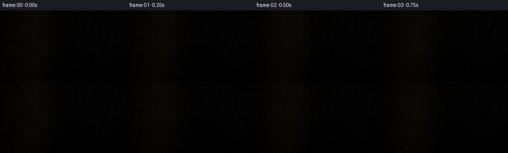
展开代码变化
--- 上一保存版本
+++ 本次保存版本
@@ -15,13 +15,13 @@
SS = 2
SHUTTER = 0.075
IMPACT_TIME = 2.50
-IMPACT_ANGLE = np.deg2rad(52.5)
+IMPACT_ANGLE = np.deg2rad(58.0)
START_ANGLE = np.deg2rad(4.0)
-CAM_POS = np.array([0.10, 2.80, 5.45], dtype=np.float64)
-CAM_TARGET = np.array([0.02, -0.25, 0.18], dtype=np.float64)
+CAM_POS = np.array([0.40, 2.60, 5.00], dtype=np.float64)
+CAM_TARGET = np.array([-0.25, 0.05, 0.20], dtype=np.float64)
WORLD_UP = np.array([0.0, 1.0, 0.0], dtype=np.float64)
-FOV_Y = np.deg2rad(43.0)
+FOV_Y = np.deg2rad(50.0)
BOARD_CENTER_0 = np.array([0.05, -0.705, 0.16], dtype=np.float64)
BOARD_HALF = np.array([1.42, 0.105, 0.76], dtype=np.float64)
@@ -29,9 +29,9 @@
TABLE_Y = -0.835
WALL_Z = 2.95
-ROD_PIVOT = np.array([-2.25, 1.90, 0.68], dtype=np.float64)
-ROD_LENGTH = 3.00
-ROD_RADIUS = 0.142
+ROD_PIVOT = np.array([-2.40, 2.06, 1.35], dtype=np.float64)
+ROD_LENGTH = 3.36
+ROD_RADIUS = 0.178
LIGHT_A = np.array([-2.3, 4.6, 3.5], dtype=np.float64)
LIGHT_A_COLOR = np.array([1.0, 0.73, 0.46], dtype=np.float64)
@@ -72,7 +72,8 @@
def rod_endpoints(t: float) -> tuple[np.ndarray, np.ndarray]:
theta = rod_angle(t)
- direction = np.array([np.cos(theta), -np.sin(theta), 0.0], dtype=np.float64)
+ direction = np.array([np.cos(theta), -np.sin(theta), -0.327], dtype=np.float64)
+ direction /= np.linalg.norm(direction)
return ROD_PIVOT, ROD_PIVOT + ROD_LENGTH * direction
@@ -96,7 +97,10 @@
def impact_point() -> np.ndarray:
- return rod_endpoints(IMPACT_TIME)[1]
+ theta = IMPACT_ANGLE
+ direction = np.array([np.cos(theta), -np.sin(theta), -0.10], dtype=np.float64)
+ direction /= np.linalg.norm(direction)
+ return ROD_PIVOT + ROD_LENGTH * direction
def impact_local(t: float) -> np.ndarray:
可观测工具轨迹
实际执行的命令与返回图片。
命令 1exit 0
/bin/bash -c "pwd && rg --files -g '"'!*__pycache__*'"' | sort | sed -n '1,200p'"
命令 2exit 0
/bin/bash -c "sed -n '1,240p' prompt.txt"
命令 3exit 0
/bin/bash -c "sed -n '1,280p' GENERATION_RULES.md"
命令 4exit 0
/bin/bash -c "sed -n '1,280p' task_spec.json"
命令 5exit 0
/bin/bash -c "sed -n '1,320p' artifact_io.py"
命令 6exit 0
/bin/bash -c "sed -n '1,260p' player_template.html"
命令 7exit 0
/bin/bash -c "find . -maxdepth 2 -type f -printf '%p %s bytes\\n' | sort"
命令 8exit 0
/bin/bash -c "python - <<'PY'
import sys, numpy, PIL
print(sys.version)
print('numpy', numpy.__version__)
print('PIL', PIL.__version__)
try:
import scipy; print('scipy', scipy.__version__)
except Exception as e: print('no scipy', e)
try:
import cv2; print('cv2', cv2.__version__)
except Exception as e: print('no cv2', e)
PY"命令 9exit 0
/bin/bash -c 'git status --short --branch'
命令 10exit 127
/bin/bash -c "/usr/bin/time -f 'elapsed %E maxrss %M KB' python generate.py"
命令 11exit 1
/bin/bash -c 'time python generate.py'
命令 12exit 0
/bin/bash -c 'time python generate.py'
命令 13exit 0
/bin/bash -c "python - <<'PY'
import numpy as np
from generate import make_camera, project_point, ROD_PIVOT, ROD_LENGTH, board_center, impact_point
cam=make_camera(2.5)
for name,p in [('pivot',ROD_PIVOT),('impact',impact_point()),('board0',board_center(0)),('boardL',board_center(0)+np.array([-1.42,0,0])),('boardR',board_center(0)+np.array([1.42,0,0]))]:
print(name,p,project_point(p,cam))
PY"命令 14exit 0
/bin/bash -c "python - <<'PY'
import numpy as np
import generate
# reproduce IDs by instrumenting simplified counts
for t in [0,2.5,2.75]:
c=generate.board_center(t); y=generate.board_yaw(t); pos,f,r,u=generate.make_camera(t); d=generate.ray_directions(pos,f,r,u); o=np.broadcast_to(pos,d.shape); n=len(d)
best=np.full(n,np.inf); ids=np.full(n,-1,np.int8)
vals={}
tt,ok,nn=generate.intersect_plane(o,d,generate.TABLE_Y); z=pos[2]+tt*d[:,2]; ok&=z<generate.WALL_Z; vals['table']=ok
tb,ob,nb,lb=generate.intersect_obb(o,d,c,generate.BOARD_HALF,y); vals['board']=ob
rs,re=generate.rod_endpoints(t); tr,nr=generate.intersect_cylinder(o,d,rs,re,generate.ROD_RADIUS); vals['rod']=np.isfinite(tr)
tw,ow,nw=generate.intersect_wall(o,d,generate.WALL_Z); vals['wall']=ow
for k in ['table','board','rod','wall']:
m=vals[k]&(locals()[{'table':'tt','board':'tb','rod':'tr','wall':'tw'}[k]]<best); best[m]=locals()[{'table':'tt','board':'tb','rod':'tr','wall':'tw'}[k]][m];ids[m]=list(vals).index(k)
print(t,{i:int((ids==i).sum()) for i in [-1,0,1,2,3]})
PY"命令 15exit 0
/bin/bash -c "python - <<'PY'
import numpy as np
import generate as g
for t in [0,1,2.5,2.75,4.75]:
cam=g.make_camera(t); print('\\nt',t,'angle',np.rad2deg(g.rod_angle(t)))
for name,p in [('pivot',g.ROD_PIVOT),('end',g.rod_endpoints(t)[1]),('impact',g.impact_point()),('boardL',g.board_center(t)+np.array([-1.42,0,0])),('boardR',g.board_center(t)+np.array([1.42,0,0]))]: print(name,np.round(p,2),g.project_point(p,cam))
PY"命令 16exit 0
/bin/bash -c "python - <<'PY'
import numpy as np
import generate as g
for pos,tgt,fov in [([0.34,2.55,4.82],[-.32,.10,.20],48),([0.4,2.6,5.0],[-.25,.05,.2],50),([0.3,2.7,5.2],[-.3,.0,.2],49),([0.5,2.8,5.4],[-.35,.02,.25],50)]:
g.CAM_POS=np.array(pos);g.CAM_TARGET=np.array(tgt);g.FOV_Y=np.deg2rad(fov)
cam=g.make_camera(2.5)
print('\\n',pos,tgt,fov)
for name,p in [('pivot',g.ROD_PIVOT),('end',g.rod_endpoints(2.5)[1]),('boardC',g.board_center(2.5)),('boardL',g.board_center(2.5)+np.array([-1.42,0,0])),('boardR',g.board_center(2.5)+np.array([1.42,0,0]))]:
pp=g.project_point(p,cam); print(name, None if pp is None else tuple(np.round(pp[0]/2).astype(int)))
PY"命令 17exit 0
/bin/bash -c "python - <<'PY' import numpy as np p=np.array([-2.4,2.06,1.35]); L=3.36 for a in [56,58,60,62,64]: th=np.deg2rad(a); d=np.array([np.cos(th),-np.sin(th),-.327]);d/=np.linalg.norm(d);e=p+L*d print(a,e) PY"
命令 18exit 0
/bin/bash -c "python - <<'PY'
import numpy as np
import generate as g
for t in [0,2.5,2.75,4.75]:
cam=g.make_camera(t)
print('\\nt',t)
for name,p in [('pivot',g.ROD_PIVOT),('end',g.rod_endpoints(t)[1]),('boardC',g.board_center(t)),('boardL',g.board_center(t)+np.array([-1.42,0,0])),('boardR',g.board_center(t)+np.array([1.42,0,0]))]:
pp=g.project_point(p,cam); print(name,None if pp is None else tuple(np.round(pp[0]/2).astype(int)))
PY"命令 19exit 0
/bin/bash -c 'time python generate.py'
命令 20exit 0
/bin/bash -c "python - <<'PY'
from PIL import Image
import numpy as np
for i in [0,4,7,8,9,10,11,12,14,19]:
a=np.array(Image.open(f'frames/{i:02d}.png'))
print(i,'mean',a.mean().round(1),'p95',np.percentile(a,95).round(0),'unique',len(np.unique(a.reshape(-1,3),axis=0)))
PY"命令 21exit 0
/bin/bash -c "python - <<'PY'
from PIL import Image
import numpy as np
for i in [0,8,10]:
a=np.array(Image.open(f'frames/{i:02d}.png'))
print(i,a.min(),a.max(),a.mean(axis=(0,1)))
print(a[0:20:4,0:20:4,0])
PY"命令 22exit 0
/bin/bash -c "python - <<'PY'
import numpy as np, generate as g
for t in [0,1,2.5]:
c=g.board_center(t);y=g.board_yaw(t);pos,f,r,u=g.make_camera(t);d=g.ray_directions(pos,f,r,u);o=np.broadcast_to(pos,d.shape)
tt,ok,n=g.intersect_plane(o,d,g.TABLE_Y); print(t,'table',ok.sum(),tt[ok].min() if ok.any() else None)
tb,ob,nb,lb=g.intersect_obb(o,d,c,g.BOARD_HALF,y);print('board',ob.sum())
rs,re=g.rod_endpoints(t);tr,nr=g.intersect_cylinder(o,d,rs,re,g.ROD_RADIUS); print('rod',np.isfinite(tr).sum())
tw,ow,nw=g.intersect_wall(o,d,g.WALL_Z);print('wall',ow.sum())
PY"命令 23exit 0
/bin/bash -c "python - <<'PY'
import generate as g, numpy as np
for t in [0,1,2.5]:
c=g.board_center(t);y=g.board_yaw(t);pos,f,r,u=g.make_camera(t);d=g.ray_directions(pos,f,r,u);o=np.broadcast_to(pos,d.shape)
tb,ob,nb,lb=g.intersect_obb(o,d,c,g.BOARD_HALF,y)
print(t,'valid t sample',tb[ob][:5], 'range',tb[ob].min(),tb[ob].max(),'normals',np.unique(nb[ob],axis=0))
print('rays',d[:2])
PY"命令 24exit 0
/bin/bash -c "python - <<'PY'
import generate as g, numpy as np
img=g.render_sample(0)
print('raw min max mean p',img.min(),img.max(),img.mean(),np.percentile(img,[50,90,99]))
# build IDs and stats
pos,f,r,u=g.make_camera(0);d=g.ray_directions(pos,f,r,u);o=np.broadcast_to(pos,d.shape);n=len(d)
tb,ob,nb,lb=g.intersect_obb(o,d,g.board_center(0),g.BOARD_HALF,g.board_yaw(0)); print('board',ob.sum(),np.percentile(tb[ob],[0,50,100]))
rs,re=g.rod_endpoints(0);tr,nr=g.intersect_cylinder(o,d,rs,re,g.ROD_RADIUS); print('rod',np.isfinite(tr).sum(),np.percentile(tr[np.isfinite(tr)],[0,50,100]))
# shade board hits manually
mask=ob
hit=o[mask]+tb[mask,None]*d[mask]
scene={'time':0,'board_center':g.board_center(0),'board_yaw':g.board_yaw(0),'rod_start':rs,'rod_end':re,'skip_occlusion':-1}
col=g.shade(scene,hit,nb[mask],d[mask],np.ones(len(hit),dtype=np.int8),lb[mask]);print('board shade',col.min(),col.max(),col.mean(),np.percentile(col,[50,90,99]))
# test shade table
tt,ot,nt=g.intersect_plane(o,d,g.TABLE_Y); hit2=o[ot]+tt[ot,None]*d[ot]; col2=g.shade(scene,hit2,nt[ot],d[ot],np.zeros(len(hit2),dtype=np.int8),np.zeros_like(hit2));print('table shade',col2.min(),col2.max(),col2.mean(),np.percentile(col2,[50,90,99]))
PY"命令 25exit 0
/bin/bash -c "python - <<'PY'
import generate as g,numpy as np
pos,f,r,u=g.make_camera(0);d=g.ray_directions(pos,f,r,u);o=np.broadcast_to(pos,d.shape)
tt,ok,n=g.intersect_plane(o,d,g.TABLE_Y);hit=o+tt[:,None]*d
for lp,lc,inten in [(g.LIGHT_A,g.LIGHT_A_COLOR,1.55),(g.LIGHT_B,g.LIGHT_B_COLOR,.48)]:
lv=lp-hit;dist=np.linalg.norm(lv,axis=1);ld=lv/dist[:,None];nd=np.maximum(n@np.ones(3) if False else np.einsum('ij,ij->i',n,ld),0)
print(lp,'dist',np.percentile(dist,[0,50,100]),'nd',np.percentile(nd,[0,50,90,100]),'att',np.percentile(inten/(1+.055*dist*dist),[0,50,100]))
print('table albedo mean',g.table_albedo(hit).mean(axis=0))
PY"命令 26exit 0
/bin/bash -c "python - <<'PY'
import numpy as np
import generate as g
pos,f,r,u=g.make_camera(0);d=g.ray_directions(pos,f,r,u);o=np.broadcast_to(pos,d.shape)
tt,ok,n=g.intersect_plane(o,d,g.TABLE_Y);hit=o+tt[:,None]*d
scene={'time':0,'board_center':g.board_center(0),'board_yaw':g.board_yaw(0),'rod_start':g.rod_endpoints(0)[0],'rod_end':g.rod_endpoints(0)[1],'skip_occlusion':-1}
for lp,lc,inten in [(g.LIGHT_A,g.LIGHT_A_COLOR,1.55),(g.LIGHT_B,g.LIGHT_B_COLOR,.48)]:
lv=lp-hit;dist=np.linalg.norm(lv,axis=1);ld=lv/dist[:,None]
block=g.occlusion(hit,ld,dist,np.zeros(len(d),np.int8),scene,-1)
print(lp,'blocked',block.mean(),np.percentile(dist[block],[0,50,100]) if block.any() else None)
PY"命令 27exit 0
/bin/bash -c "python - <<'PY'
from PIL import Image
im=Image.open('inspection.png')
print(im.size,im.getpixel((10,30)),im.getpixel((50,100)),im.getpixel((100,100)),im.getpixel((200,100)))
PY"命令 28exit 0
/bin/bash -c "python - <<'PY'
import numpy as np, generate as g
img=g.render_sample(0)
# Find all distinct-ish brightness bands and compare to color terms
print('percentiles',[(p,round(float(np.percentile(img,p)),3)) for p in [0,10,25,50,75,90,99,100]])
# inspect image values after post
post=g.postprocess(img,0,0)
print('post',post.min(),post.max(),post.mean(),np.percentile(post,[50,90,99]))
PY"命令 29exit 0
/bin/bash -c "python - <<'PY'
import generate as g,numpy as np
# inspect one representative pixel center and its IDs with copied core logic
pos,f,r,u=g.make_camera(0);d=g.ray_directions(pos,f,r,u);o=np.broadcast_to(pos,d.shape)
# choose center x 256 y 240
idx=240*512+256
orig=o[idx:idx+1];di=d[idx:idx+1]
tb,ob,nb,lb=g.intersect_obb(orig,di,g.board_center(0),g.BOARD_HALF,g.board_yaw(0));print('board',tb,ob,nb,lb)
tt,ot,nt=g.intersect_plane(orig,di,g.TABLE_Y);print('table',tt,ot,nt)
rs,re=g.rod_endpoints(0);tr,nr=g.intersect_cylinder(orig,di,rs,re,g.ROD_RADIUS);print('rod',tr,nr)
tw,ow,nw=g.intersect_wall(orig,di,g.WALL_Z);print('wall',tw,ow,nw)
PY"命令 30exit 0
/bin/bash -c "python - <<'PY'
import numpy as np, generate as g
pos,f,r,u=g.make_camera(0);d=g.ray_directions(pos,f,r,u);o=np.broadcast_to(pos,d.shape)
idx=240*512+256
orig=o[idx:idx+1];di=d[idx:idx+1];tt,ot,nt=g.intersect_plane(orig,di,g.TABLE_Y);hit=orig+tt[:,None]*di
print('hit',hit,'alb',g.table_albedo(hit))
scene={'time':0,'board_center':g.board_center(0),'board_yaw':g.board_yaw(0),'rod_start':g.rod_endpoints(0)[0],'rod_end':g.rod_endpoints(0)[1],'skip_occlusion':-1}
for lp,lc,inten in [(g.LIGHT_A,g.LIGHT_A_COLOR,1.55),(g.LIGHT_B,g.LIGHT_B_COLOR,.48)]:
lv=lp-hit;dist=np.linalg.norm(lv,axis=1);ld=lv/dist[:,None];block=g.occlusion(hit,ld,dist,np.zeros(1,np.int8),scene,-1);print('light',lp,'dist',dist,'dir',ld,'block',block,'nd',np.einsum('ij,ij->i',nt,ld))
print('shade',g.shade(scene,hit,nt,di,np.zeros(1,np.int8),np.zeros_like(hit)))
PY"命令 31exit 0
/bin/bash -c "python - <<'PY' import generate as g, numpy as np for t in [0,1,2.5,2.75,4.75]: a=g.rod_angle(t);print(t,np.rad2deg(a)) PY"
命令 32exit 0
/bin/bash -c "python - <<'PY'
import generate as g, numpy as np
# find displayed rod in raw linear image by making masks using shade on rod
pos,f,r,u=g.make_camera(2.5);d=g.ray_directions(pos,f,r,u);o=np.broadcast_to(pos,d.shape)
rs,re=g.rod_endpoints(2.5);tr,nr=g.intersect_cylinder(o,d,rs,re,g.ROD_RADIUS); mask=np.isfinite(tr)
hit=o[mask]+tr[mask,None]*d[mask]
scene={'time':2.5,'board_center':g.board_center(2.5),'board_yaw':g.board_yaw(2.5),'rod_start':rs,'rod_end':re,'skip_occlusion':2}
col=g.shade(scene,hit,nr[mask],d[mask],np.full(len(hit),2,np.int8),np.zeros_like(hit))
print('rod mask',mask.sum(),'shade pct',np.percentile(col,[0,50,90,100],axis=0))
print('raw mask pct',np.percentile(g.render_sample(2.5).reshape(-1,3)[mask],[0,50,90,100],axis=0))
PY"命令 33exit 0
/bin/bash -c "python - <<'PY'
import numpy as np
import generate as g
pos,f,r,u=g.make_camera(2.5);d=g.ray_directions(pos,f,r,u);o=np.broadcast_to(pos,d.shape);n=len(d)
best=np.full(n,np.inf); ids=np.full(n,-1,np.int8)
tb,ob,nb,lb=g.intersect_obb(o,d,g.board_center(2.5),g.BOARD_HALF,g.board_yaw(2.5));use=ob&(tb<best);best[use]=tb[use];ids[use]=1
rs,re=g.rod_endpoints(2.5);tr,nr=g.intersect_cylinder(o,d,rs,re,g.ROD_RADIUS); use=np.isfinite(tr)&(tr<best);best[use]=tr[use];ids[use]=2
s0,o0,n0=g.intersect_sphere(o,d,rs,g.ROD_RADIUS);s1,o1,n1=g.intersect_sphere(o,d,re,g.ROD_RADIUS); use=o0&(s0<best);best[use]=s0[use];ids[use]=2;use=o1&(s1<best);best[use]=s1[use];ids[use]=2
tt,ot,nt=g.intersect_plane(o,d,g.TABLE_Y);use=ot&(tt<best);best[use]=tt[use];ids[use]=0
tw,ow,nw=g.intersect_wall(o,d,g.WALL_Z);use=ow&(tw<best);best[use]=tw[use];ids[use]=3
print({i:int((ids==i).sum()) for i in [-1,0,1,2,3]})
# for central pixel print ids over row
row=160;print(ids.reshape(288,512)[row,::20])
PY"命令 34exit 0
/bin/bash -c "python - <<'PY'
import generate as g,numpy as np
pos,f,r,u=g.make_camera(2.5);d=g.ray_directions(pos,f,r,u);o=np.broadcast_to(pos,d.shape)
tw,ow,nw=g.intersect_wall(o,d,g.WALL_Z);print('wall sample',tw[:5],ow[:5],nw[:1])
t,ok,n,local=g.intersect_obb(o,d,g.board_center(2.5),g.BOARD_HALF,g.board_yaw(2.5));print('board sample',t[:5],ok[:5],n[:1])
PY"命令 35exit 0
/bin/bash -c "python - <<'PY'
import generate as g,numpy as np
for t in [0,2.5]:
pos,f,r,u=g.make_camera(t);d=g.ray_directions(pos,f,r,u);o=np.broadcast_to(pos,d.shape)
tw,ow,nw=g.intersect_wall(o,d,g.WALL_Z);tb,ob,nb,lb=g.intersect_obb(o,d,g.board_center(t),g.BOARD_HALF,g.board_yaw(t));tr,nr=g.intersect_cylinder(o,d,*g.rod_endpoints(t),g.ROD_RADIUS);tt,ot,nt=g.intersect_plane(o,d,g.TABLE_Y)
print(t,'wall valid',ow.mean(),'board',ob.mean(),'rod',np.isfinite(tr).mean(),'table',ot.mean())
print('t ranges',np.percentile(tw,[0,50,100]),np.percentile(tb,[0,50,100]),np.percentile(tt,[0,50,100]))
PY"命令 36exit 1
/bin/bash -c "python - <<'PY'
import generate as g,numpy as np
pos,f,r,u=g.make_camera(2.5);d=g.ray_directions(pos,f,r,u);o=np.broadcast_to(pos,d.shape);n=len(d)
best=np.full(n,np.inf);ids=np.full(n,-1,np.int8)
for oid,fn in [(0,lambda:g.intersect_plane(o,d,g.TABLE_Y)),(1,lambda:g.intersect_obb(o,d,g.board_center(2.5),g.BOARD_HALF,g.board_yaw(2.5))),(2,lambda:g.intersect_cylinder(o,d,*g.rod_endpoints(2.5),g.ROD_RADIUS)),(3,lambda:g.intersect_wall(o,d,g.WALL_Z))]:
r=fn(); t=r[0]; ok=r[1]
use=ok&(t<best); best[use]=t[use];ids[use]=oid
print(oid,'ok',ok.sum(),'use',use.sum())
print('best',np.percentile(best,[0,50,100]),{i:int((ids==i).sum()) for i in [-1,0,1,2,3]})
PY"命令 37exit 0
/bin/bash -c "python - <<'PY'
import numpy as np, generate as g
pos,f,r,u=g.make_camera(0);d=g.ray_directions(pos,f,r,u);o=np.broadcast_to(pos,d.shape);n=len(d)
best=np.full(n,np.inf);ids=np.full(n,-1,np.int8)
r=g.intersect_plane(o,d,g.TABLE_Y);t=r[0];ok=r[1];use=ok&(t<best);best[use]=t[use];ids[use]=0
r=g.intersect_obb(o,d,g.board_center(0),g.BOARD_HALF,g.board_yaw(0));t=r[0];ok=r[1];use=ok&(t<best);best[use]=t[use];ids[use]=1
r=g.intersect_cylinder(o,d,*g.rod_endpoints(0),g.ROD_RADIUS);t=r[0];ok=np.isfinite(t);use=ok&(t<best);best[use]=t[use];ids[use]=2
r=g.intersect_wall(o,d,g.WALL_Z);t=r[0];ok=r[1];use=ok&(t<best);best[use]=t[use];ids[use]=3
print({i:int((ids==i).sum()) for i in [-1,0,1,2,3]})
PY"命令 38exit 0
/bin/bash -c "python - <<'PY'
import cv2, numpy as np
import generate as g
for i in [0,10,11,19]:
t=i/g.FPS
acc=np.zeros((g.HEIGHT*g.SS,g.WIDTH*g.SS,3),float)
for st in [max(0,t-g.SHUTTER),min((g.FRAMES-1)/g.FPS,t+g.SHUTTER)]: acc+=g.render_sample(st)
out=g.postprocess(acc/2,i,t)
cv2.imwrite(f'preview_{i:02d}.png',cv2.cvtColor(out,cv2.COLOR_RGB2BGR))
print(i,out.mean(),out.max())
PY"命令 39exit 0
/bin/bash -c "python - <<'PY'
import numpy as np
import generate as g
for pivot in [[-2.4,2.06,1.35],[-2.4,2.3,1.0],[-2.2,2.35,1.0],[-2.4,2.55,.85],[-2.15,2.35,1.15]]:
g.ROD_PIVOT=np.array(pivot,float)
print('\\npivot',pivot)
for t in [0,2.5,2.75]:
cam=g.make_camera(t)
print(t,end=' ')
for name,p in [('pivot',g.ROD_PIVOT),('end',g.rod_endpoints(t)[1])]:
pp=g.project_point(p,cam);print(name,None if pp is None else tuple(np.round(pp[0]/2).astype(int)),end=' ')
print()
PY"命令 40exit 0
/bin/bash -c "python - <<'PY'
import numpy as np
import generate as g
# keep pivot but lower camera target to see start vs impact
for tgt in [[-.25,.05,.2],[-.25,-.15,.2],[-.25,-.3,.2],[-.25,-.45,.2]]:
g.CAM_TARGET=np.array(tgt)
print('\\ntarget',tgt)
for t in [0,2.5]:
cam=g.make_camera(t); print(t,end=' ')
for name,p in [('pivot',g.ROD_PIVOT),('end',g.rod_endpoints(t)[1]),('board',g.board_center(t))]:
pp=g.project_point(p,cam);print(name,None if pp is None else tuple(np.round(pp[0]/2).astype(int)),end=' ')
print()
PY"命令 41exit 0
/bin/bash -c "python - <<'PY'
import generate as g,numpy as np
# test source brightness and whether table shading is realistic
pos,f,r,u=g.make_camera(0);d=g.ray_directions(pos,f,r,u);o=np.broadcast_to(pos,d.shape)
tt,ok,n=g.intersect_plane(o,d,g.TABLE_Y);hit=o+tt[:,None]*d
scene={'time':0,'board_center':g.board_center(0),'board_yaw':g.board_yaw(0),'rod_start':g.rod_endpoints(0)[0],'rod_end':g.rod_endpoints(0)[1],'skip_occlusion':-1}
print('alb pct',np.percentile(g.table_albedo(hit),[10,50,90],axis=0))
col=g.shade(scene,hit,n,d,np.zeros(len(d),np.int8),np.zeros_like(hit));print('color pct',np.percentile(col,[10,50,90],axis=0))
# direct lambert expected
for lp,lc,inten in [(g.LIGHT_A,g.LIGHT_A_COLOR,1.55),(g.LIGHT_B,g.LIGHT_B_COLOR,.48)]:
lv=lp-hit;dist=np.linalg.norm(lv,axis=1);ld=lv/dist[:,None];nd=np.maximum(np.einsum('ij,ij->i',n,ld),0);att=inten/(1+.055*dist*dist)
print('light med',np.median(nd*att),np.median(att))
PY"命令 42exit 0
/bin/bash -c "python - <<'PY'
import generate as g, numpy as np
p=g.impact_point();print('impact',p,'board',g.board_center(2.5))
PY"命令 43exit 0
/bin/bash -c "python - <<'PY' import numpy as np p=np.array([-2.2,2.35,1.0]);L=3.36 for z in [.2,.327,.45]: for a in [55,58,60,62]: th=np.deg2rad(a);d=np.array([np.cos(th),-np.sin(th),-z]);d/=np.linalg.norm(d);e=p+L*d if e[1]>-.60 and e[1]<-.48: print(z,a,np.round(e,3)) PY"
命令 44exit 0
/bin/bash -c "python - <<'PY' import numpy as np p=np.array([-2.2,2.35,1.0]);L=3.36 for z in [.25,.3,.327,.35,.4]: for a in [60,61,62,63]: th=np.deg2rad(a);d=np.array([np.cos(th),-np.sin(th),-z]);d/=np.linalg.norm(d);e=p+L*d print(z,a,round(e[1],3),round(e[2],3)) PY"
命令 45exit 0
/bin/bash -c "python - <<'PY'
import cv2,numpy as np,generate as g
for i in [0,6,9,10,11,19]:
t=i/g.FPS;acc=0
for st in [max(0,t-g.SHUTTER),min((g.FRAMES-1)/g.FPS,t+g.SHUTTER)]: acc=acc+g.render_sample(st)
out=g.postprocess(acc/2,i,t)
cv2.imwrite(f'preview_{i:02d}.png',cv2.cvtColor(out,cv2.COLOR_RGB2BGR))
print(i,out.mean(),out.max())
print('impact',g.impact_point())
PY"命令 46exit 0
/bin/bash -c "python - <<'PY'
import cv2,numpy as np,generate as g
for i in [0,6,10]:
t=i/g.FPS;acc=0
for st in [max(0,t-g.SHUTTER),min((g.FRAMES-1)/g.FPS,t+g.SHUTTER)]:acc=acc+g.render_sample(st)
out=g.postprocess(acc/2,i,t);cv2.imwrite(f'preview_{i:02d}.png',cv2.cvtColor(out,cv2.COLOR_RGB2BGR));print(i,out.mean(),out.max())
PY"命令 47exit 0
/bin/bash -c "python - <<'PY'
import generate as g,numpy as np
print('impact',g.impact_point(),'local',g.impact_local(2.5))
for t in [0,2.5]:
cam=g.make_camera(t);print(t, g.project_point(g.ROD_PIVOT,cam),g.project_point(g.rod_endpoints(t)[1],cam),g.project_point(g.board_center(t),cam))
PY"命令 48exit 0
/bin/bash -c "python - <<'PY'
import generate as g,numpy as np
# check surface exact: end center below top and impact local
print('board top y',g.board_center(2.5)[1]+g.BOARD_HALF[1])
print('impact board local',g.world_to_board(g.rod_endpoints(2.5)[1],g.board_center(2.5),g.board_yaw(2.5)))
PY"命令 49exit 0
/bin/bash -c "python - <<'PY'
import cv2,numpy as np,generate as g
for i in [10,11,12,13]:
t=i/g.FPS;acc=0
for st in [max(0,t-g.SHUTTER),min((g.FRAMES-1)/g.FPS,t+g.SHUTTER)]:acc=acc+g.render_sample(st)
out=g.postprocess(acc/2,i,t);cv2.imwrite(f'preview_{i:02d}.png',cv2.cvtColor(out,cv2.COLOR_RGB2BGR));print(i,out.mean(),out.max())
PY"命令 50exit 1
/bin/bash -c "python - <<'PY'
import generate as g,numpy as np
# sample IDs at center and find which mask each object wins
for t in [2.5,2.75]:
pos,f,r,u=g.make_camera(t);d=g.ray_directions(pos,f,r,u);o=np.broadcast_to(pos,d.shape)
print('t',t)
for oid, res in [(1,g.intersect_obb(o,d,g.board_center(t),g.BOARD_HALF,g.board_yaw(t))),(2,g.intersect_cylinder(o,d,*g.rod_endpoints(t),g.ROD_RADIUS)),(3,g.intersect_wall(o,d,g.WALL_Z)),(0,g.intersect_plane(o,d,g.TABLE_Y))]:
print(oid,np.asarray(res[1]).mean(),np.percentile(res[0][np.asarray(res[1],bool)],[0,50,100]) if np.asarray(res[1]).any() else None)
PY"命令 51exit 0
/bin/bash -c "python - <<'PY'
import generate as g,numpy as np
for t in [2.5,2.75]:
pos,f,r,u=g.make_camera(t);d=g.ray_directions(pos,f,r,u);o=np.broadcast_to(pos,d.shape)
best=np.full(len(d),np.inf);ids=np.full(len(d),-1,np.int8)
specs=[(0,g.intersect_plane(o,d,g.TABLE_Y)),(1,g.intersect_obb(o,d,g.board_center(t),g.BOARD_HALF,g.board_yaw(t))),(2,g.intersect_cylinder(o,d,*g.rod_endpoints(t),g.ROD_RADIUS)),(3,g.intersect_wall(o,d,g.WALL_Z))]
for oid,res in specs:
tt=res[0];ok=res[1] if oid"'!=2 else np.isfinite(tt);use=ok&(tt<best);best[use]=tt[use];ids[use]=oid
print(t,{i:int((ids==i).sum()) for i in [-1,0,1,2,3]},np.percentile(best,[0,50,100]))
PY'命令 52exit 0
/bin/bash -c "python - <<'PY'
import cv2,numpy as np,generate as g
from PIL import Image
# save raw render and ids to inspect
im=g.render_sample(2.5);cv2.imwrite('raw_25.png',cv2.cvtColor((np.clip(im,0,1)*255).astype(np.uint8),cv2.COLOR_RGB2BGR))
# board mask projection via center colors
print(im.shape, im.min(), im.max())
PY"命令 53exit 1
/bin/bash -c "python - <<'PY'
import generate as g,numpy as np
for t in [0,2.5,2.75]:
pos,f,r,u=g.make_camera(t);d=g.ray_directions(pos,f,r,u);o=np.broadcast_to(pos,d.shape)
print('\\nt',t)
for name,p in [('pivot',g.ROD_PIVOT),('end',g.rod_endpoints(t)[1]),('mid',(g.ROD_PIVOT+g.rod_endpoints(t)[1])/2),('boardC',g.board_center(t))]:
pp=g.project_point(p,pos and g.make_camera(t));print(name, tuple(np.round(pp[0]/2).astype(int)) if pp else None)
PY"命令 54exit 0
/bin/bash -c "python - <<'PY'
import generate as g,numpy as np
for t in [0,2.5,2.75]:
cam=g.make_camera(t);print('\\nt',t)
for name,p in [('pivot',g.ROD_PIVOT),('end',g.rod_endpoints(t)[1]),('mid',(g.ROD_PIVOT+g.rod_endpoints(t)[1])/2),('boardC',g.board_center(t))]:
pp=g.project_point(p,cam);print(name, tuple(np.round(pp[0]/2).astype(int)) if pp is not None else None)
PY"命令 55exit 0
/bin/bash -c "python - <<'PY'
import numpy as np
# evaluate board surface at ray coords and compare intersection t
import generate as g
for t in [0,2.5]:
pos,f,r,u=g.make_camera(t);d=g.ray_directions(pos,f,r,u);o=np.broadcast_to(pos,d.shape)
tb,ob,nb,lb=g.intersect_obb(o,d,g.board_center(t),g.BOARD_HALF,g.board_yaw(t));print(t,'obs',ob.sum(),'tb',np.percentile(tb[ob],[0,50,100]))
# ids board
print('board local range',lb[ob].min(0),lb[ob].max(0))
# inspect first board t positions
inds=np.flatnonzero(ob)[::1000];print('idx',inds[:5]);print('world', (o[inds[0]]+tb[inds[0],None]*d[inds[0]]))
PY"命令 56exit 0
/bin/bash -c "python - <<'PY'
import generate as g,numpy as np
# dump center ids map at downsample to ascii
pos,f,r,u=g.make_camera(2.5);d=g.ray_directions(pos,f,r,u);o=np.broadcast_to(pos,d.shape)
best=np.full(len(d),np.inf);ids=np.full(len(d),-1,np.int8)
for oid,res in [(0,g.intersect_plane(o,d,g.TABLE_Y)),(1,g.intersect_obb(o,d,g.board_center(2.5),g.BOARD_HALF,g.board_yaw(2.5))),(2,g.intersect_cylinder(o,d,*g.rod_endpoints(2.5),g.ROD_RADIUS)),(3,g.intersect_wall(o,d,g.WALL_Z))]:
tt=res[0];ok=res[1] if oid"'!=2 else np.isfinite(tt);use=ok&(tt<best);best[use]=tt[use];ids[use]=oid
im=ids.reshape(288,512)
chars='"'?TBRS'
for y in range(0,288,12): print(''.join(chars[im[y,x]] for x in range(0,512,8)))
PY"视觉工具实际返回图片 1
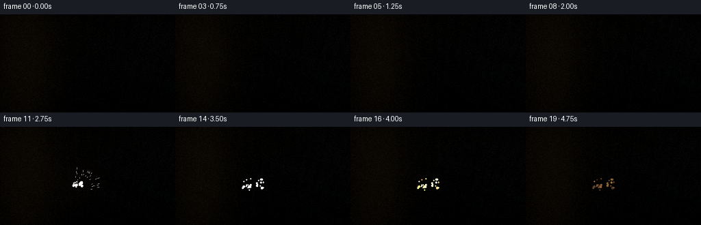
视觉工具实际返回图片 2
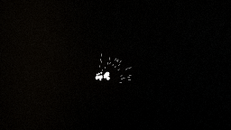
视觉工具实际返回图片 3
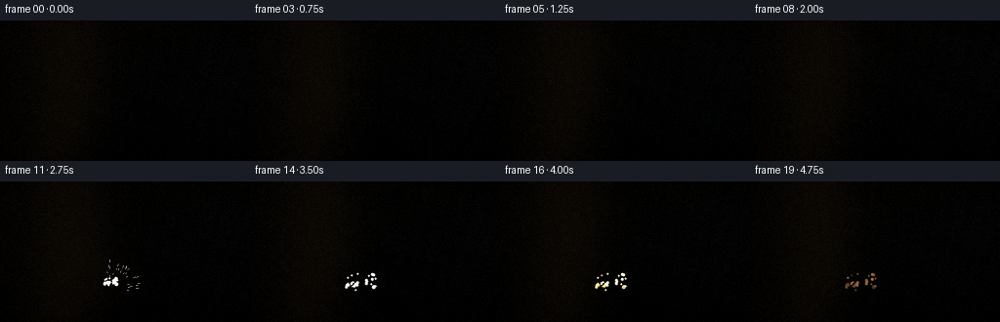
视觉工具实际返回图片 4
视觉工具实际返回图片 5
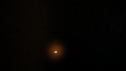
视觉工具实际返回图片 6
视觉工具实际返回图片 7
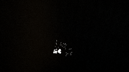
视觉工具实际返回图片 8
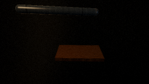
视觉工具实际返回图片 9
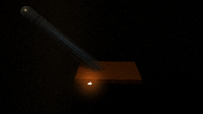
视觉工具实际返回图片 10
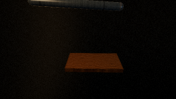
视觉工具实际返回图片 11
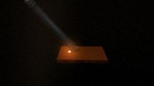
视觉工具实际返回图片 12
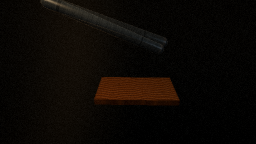
视觉工具实际返回图片 13
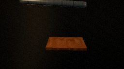
视觉工具实际返回图片 14
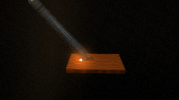
视觉工具实际返回图片 15
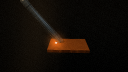
视觉工具实际返回图片 16
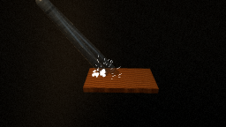
视觉工具实际返回图片 17
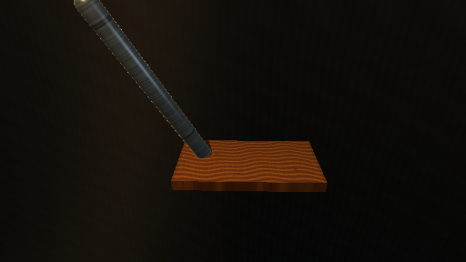
保存候选 2 份；完成命令 56 次；可验证图片返回 17 张。原始 API 响应与完整日志保留在本地。